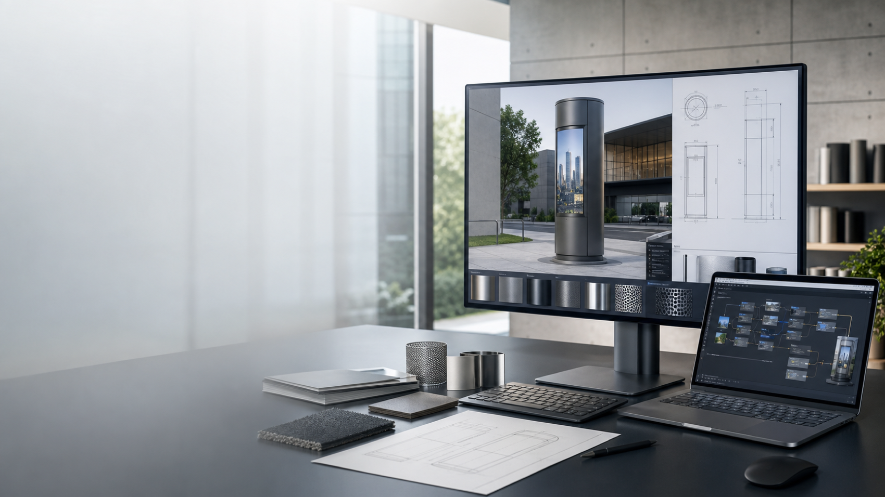
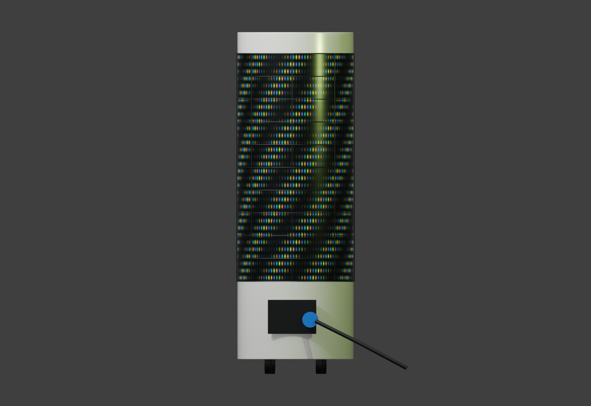
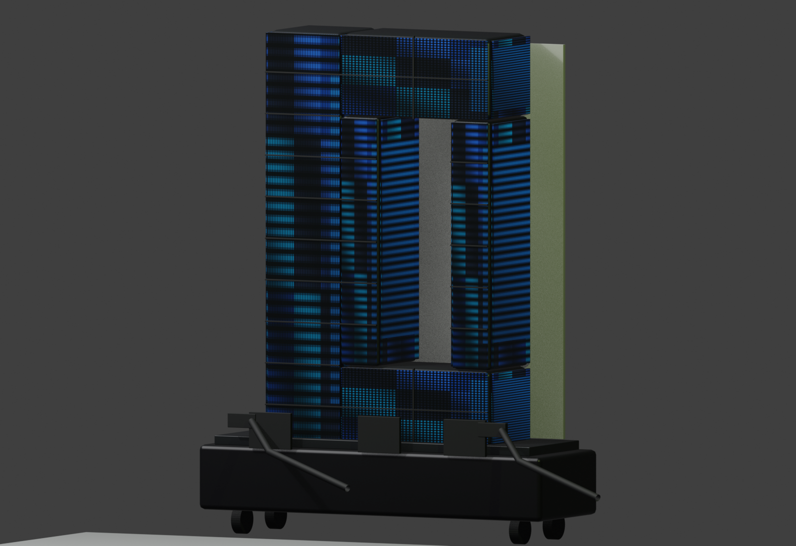
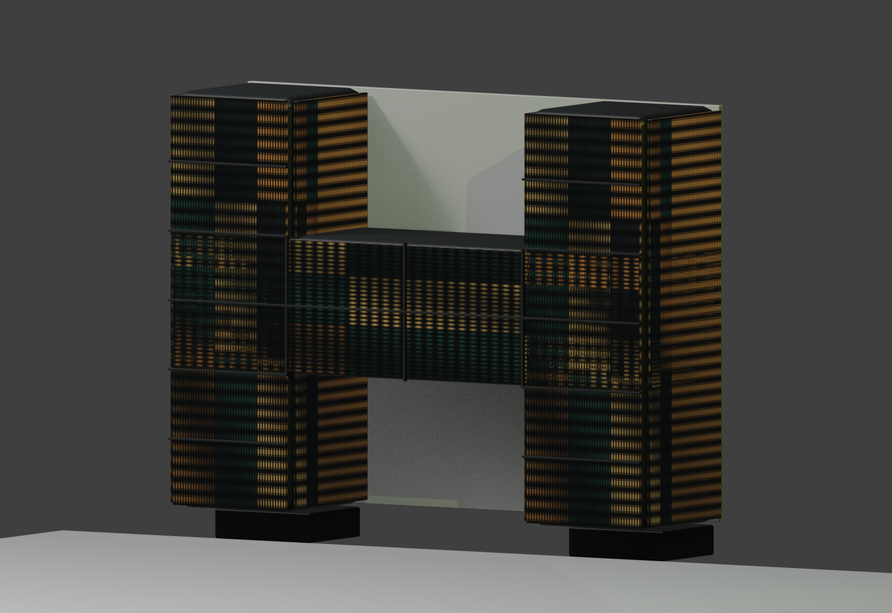
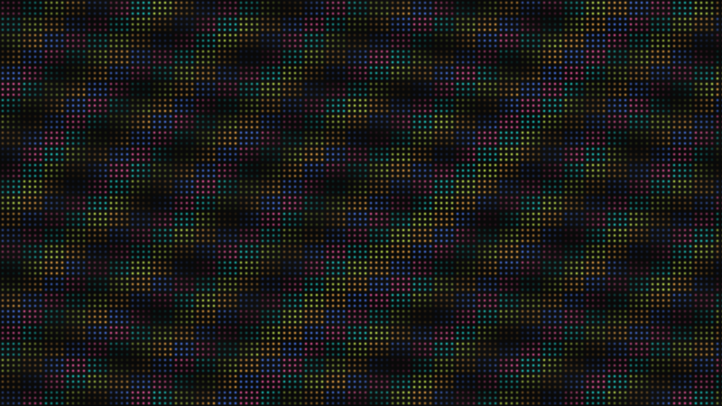

仕様書だけでは伝わらない
サイズ、質感、設置時の存在感、配線まわりは、文章や2D図面だけだと意思決定者に伝わりにくくなります。

WHY 3D PROPOSAL
サイズ、質感、設置時の存在感、配線まわりは、文章や2D図面だけだと意思決定者に伝わりにくくなります。
筐体の形、分割構造、表示面の見え方を先に共有できると、後戻りや説明のやり直しを減らせます。
AIで作った雰囲気画像とBlenderの確認ビューをLPやPDFに載せることで、提案の説得力を上げられます。
SIGNAGE SHAPES
今回の1案件だけで終わらせず、 複数の特注サイネージ案として見せます。 筐体ごとの構造と寸法感を、匿名実績として整理します。

01
曲面LEDの存在感、下部筐体、接続まわりを3Dで確認できる標準提案例です。

02
1型と0型を台座に組む大型LED。配線、開口、キャスター付き台座まで確認できます。

03
平面パネルではなく、厚みのある箱型H什器。正面と側面に映像が回り込む立体サイネージです。
LIVE WEB 3D
円筒形、10型、H型を切り替え。 ブラウザ上で回転・俯瞰できます。 商談中にも完成像を見せられます。
曲面LED、下部筐体、接続部まで見せる円筒形プレビュー。
Web 3D preview
P2.5mm MOTION
筐体形状だけでなく、 表示面で流れる映像の印象も提示します。 ドットピッチの粒感を残した演出例です。
SERVICE FLOW
設置場所、寸法、表示面、屋内外、電源や接続条件など、見た目と構造に関わる条件を整理します。
完成イメージ、素材感、利用シーンをAIで作成し、早い段階で「見せたい雰囲気」を合わせます。
筐体形状、表示面、分割、配線や接続位置などを3Dモデルで確認し、必要なビューを書き出します。
Web上で動く3Dプレビュー、確認画像、提案コピーをまとめ、商談や実績紹介に使える形へ整えます。
ANONYMIZED CASE
固有名詞や施設名は出しません。 形状検討、3D確認、映像演出を、 BANTEXの提案プロセスとして見せます。

BANTEX OFFER
製作前の案件でも、完成像や設置感を見せられます。 特注サイネージ、展示演出、イベント什器など、 形状説明が難しい案件に向いています。
完成イメージ、設置シーン、素材感を先に見せるための画像を作成します。
円筒形、10型、H型など、案件ごとの形状と比率を3Dモデルで確認します。
3DモデルとP2.5mmの映像演出をLP内に配置し、提案や実績紹介に使える形にします。
DELIVERABLE SAMPLE
NEXT ACTION
ラフな要望、既存仕様書、写真、手描きメモからでも、AIイメージと3D確認ビューに展開できます。